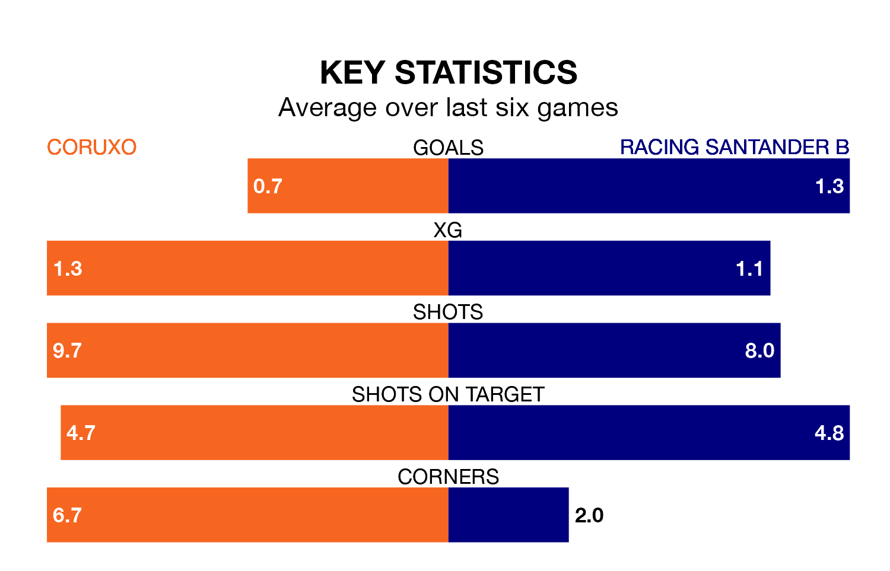

Coruxo are on a terrible run ahead of hosting Racing Santander B at Campo do Vao on Sunday, with just one point collected from their last six games.
Coruxo have picked up just one draw in their last six Segunda División RFEF Group 1 games, and face a Racing Santander B side whose last six games have brought two wins and two draws.
With 36 goals in 25 games so far this season, Racing Santander B are the league's second-highest scorers with 1.4 goals per game. But they are conceding more than average too, letting in 29 goals at a rate of 1.2 per game.
Coruxo, meanwhile, are average scorers, with 1.1 goals per game. They have conceded 1.5 goals per game.
The visitors are fifth in the table after 25 games, of which they have won nine and drawn nine, earning 36 points.
The home team are seven places behind Racing Santander B in 12th, with eight wins and five draws putting them on 29 points.
In the last three years, Coruxo and Racing Santander B have played each other on three occasions. Coruxo won one of them and Racing Santander B the other.
Their last meeting was on October 29, when Racing Santander B won 2-1 at home.
Coruxo's last match was on March 3, a 4-0 loss against Real Avilés.
Racing Santander B lost 2-1 against CD Guijuelo last time out, also on March 3.
Updated: 09:34 (UTC), 08/03/24